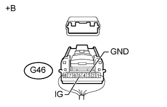

СИСТЕМА ПЕРЕДАЧИ ДАННЫХ CAN (для моделей с правосторонним рулевым управлением без системы посадки и запуска) > Прекращение обмена данными с ЭБУ рулевого управления с усилителем |
| Неисправность | Признак | Неисправный участок |
| Прекращение обмена данными с ЭБУ рулевого управления с усилителем | Выполняется любое из следующих условий:
|
|
| 1.ОТСОЕДИНИТЕ ПРОВОД ОТ ОТРИЦАТЕЛЬНОГО ВЫВОДА АККУМУЛЯТОРНОЙ БАТАРЕИ |
Отсоедините провод от отрицательного (-) вывода аккумуляторной батареи перед измерением сопротивления главной и вспомогательной шин.
| ДАЛЕЕ | |
| 2.ПРОВЕРЬТЕ ШИНУ CAN НА ОБРЫВ (ВСПОМОГАТЕЛЬНАЯ ШИНА ЭБУ РУЛЕВОГО УПРАВЛЕНИЯ С УСИЛИТЕЛЕМ) |
 |
Отсоедините разъем G46 ЭБУ рулевого управления с усилителем.
Измерьте сопротивление в соответствии со значениями, приведенными в таблице ниже.
| Контакты для подключения диагностического прибора | Положение переключателя | Заданные условия |
| G46-1 (CANH) - G46-2 (CANL) | Замок зажигания в положении OFF (ВЫКЛ) | 54 - 69 Ом |
| *a | Вид сзади разъема со стороны жгута проводов (к ЭБУ рулевого управления с усилителем в сборе) |
|
| ||||
| OK | |
| 3.ПРОВЕРЬТЕ ЖГУТ ПРОВОДОВ И РАЗЪЕМ (ЭБУ РУЛЕВОГО УПРАВЛЕНИЯ С УСИЛИТЕЛЕМ - АККУМУЛЯТОРНАЯ БАТАРЕЯ И МАССА) |
|  |
Подсоедините провод к отрицательному (-) выводу аккумуляторной батареи.
Измерьте сопротивление в соответствии со значениями, приведенными в таблице ниже.
| Контакты для подключения диагностического прибора | Состояние | Заданные условия |
| G46-3 (GND) - масса | Всегда | Менее 1 Ом |
Измерьте напряжение в соответствии со значениями, приведенными в таблице.
| Контакты для подключения диагностического прибора | Положение переключателя | Заданные условия |
| G46-5 (IG) - масса | Зажигание включено | 11 - 14 В |
| *a | Вид сзади разъема со стороны жгута проводов (к ЭБУ рулевого управления с усилителем в сборе) |
|
| ||||
| OK | ||
| ||